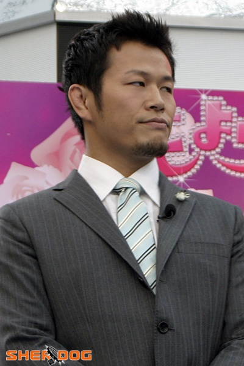

Вас приветствует программа "Клип в 21 ноль-ноль". Генки Судо на целый год моложе меня (родился 8 марта 1978 года), но пока я просиживал штаны у компьютера Генки занимался греко-римской борьбой. Во время учёбы стал чемпионом Японии, одержав победу в All Japan Junior Wrestling Championship.

В апреле 1998 года Генки переехал в США, где начал заниматься зрелищным бразильским джиу-джитсу получалось примерно вот так
В дальнейшем Генки продолжал участвовать в состязаниях преимущественно в Японии, но после оглушительной победы в 31 декабря 2006 года в престижном K-1 - Premium 2006 Dynamite Генки внезапно для всех объявляет о своём уходе.
Он ушел из рестлинга чтобы позже предстать совсем в другом качестве. С тех пор Генки написал восемь книг, женился сыграл несколько ролей в кино снял собственный фильм The R246 Story.
Об этом необычном человеке я узнал, увидев видеоклип в котором Генки поёт, а в качестве подтанцовки выступает команда World Order